Selected Works.
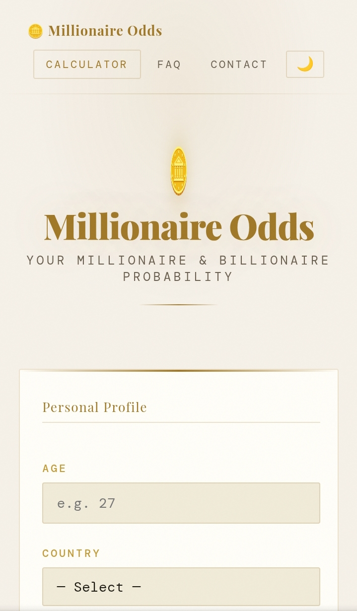
Millionaire Odds
This is a fun, educational tool for those curious about their financial futures. Answer some personality and finances questions, and discover your odds of being rich.
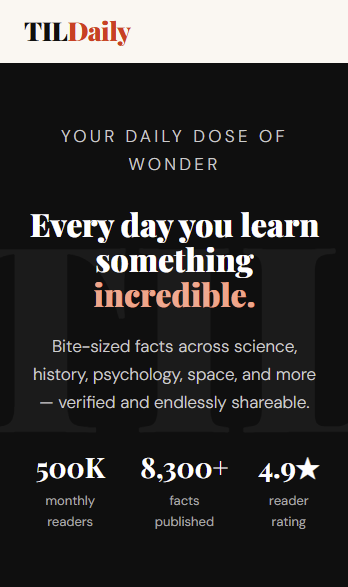
TILDaily
A website devoted to bringing you interesting factoids - daily.
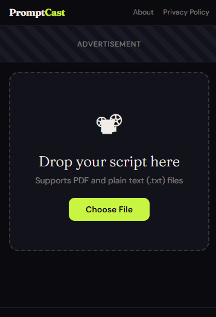
PromptCast
Your personal, private, browser-based, teleprompter/video-recorder.
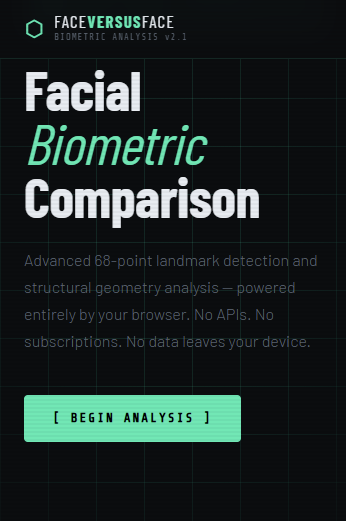
FaceVersusFace
Advanced 68-point landmark detection and structural geometry analysis — powered entirely by your browser. No APIs. No subscriptions. No data leaves your device.
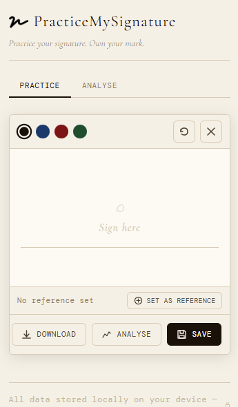
PracticeMySignature
Analyze your signature. Practice signing it. Own your mark.
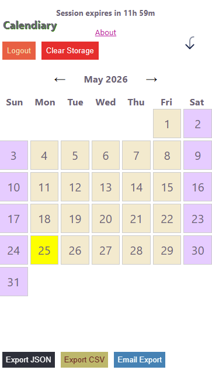
Calendiary
Your digital Dear Diary. Write down your daily experiences. Preserve notable moments.
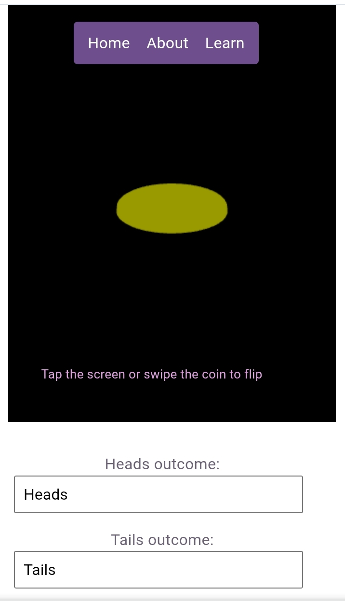
FlipCoin
Many people suffer from analysis-paralysis, overthinking in certain situations. What if you could let something else decide, once in a while? FlipCoin is a fun tool to outsource that decision-making.
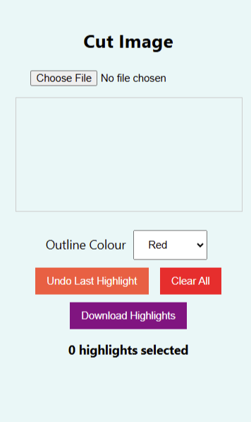
Cut Img
Image. Highlight. Download.
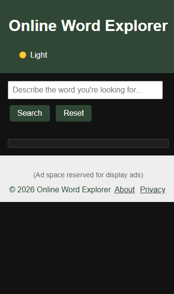
Online Word Explorer
Find words by describing what word you're thinking of
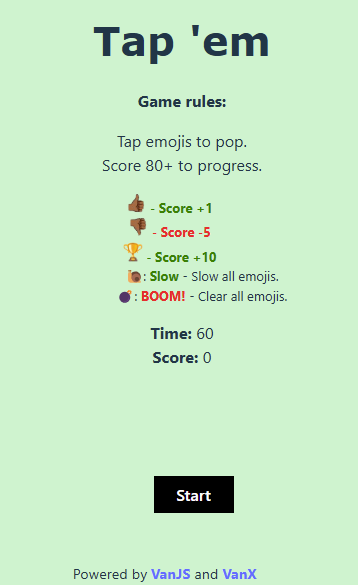
Tap 'em
Casual 2D game
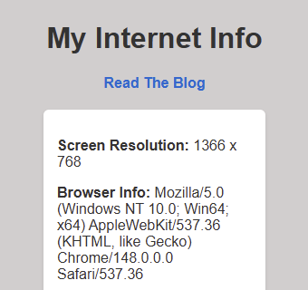
MyInternetInfo
Get insight into some of the statistics of the Internet-connected device you use. Plus, learn something about the Internet from the built-in Blog.
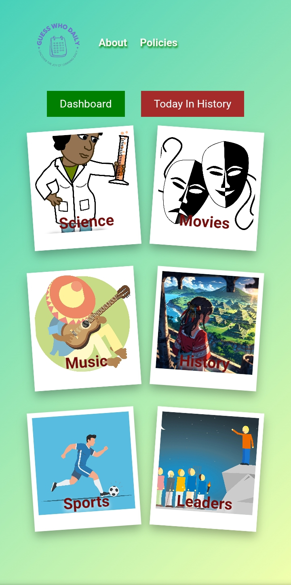
GuessWhoDaily
There are so many humans who have done amazing, as well as disturbing, things. From pioneers to prisoners, legends and leaders. We find all of them fascinating. Test your knowledge of some of the notable names in human history, everyday.
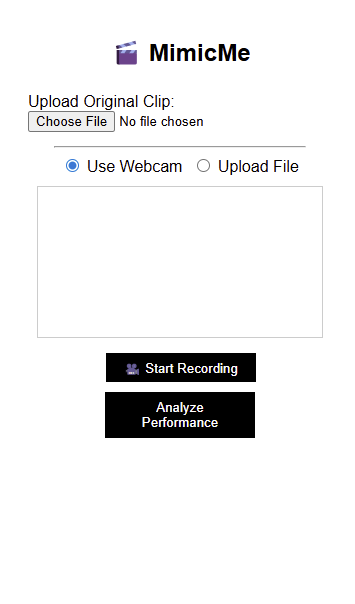
Mimic Me
Have you ever imagined yourself portraying your favourite entertainer's dance routines? Would you like to see how well you can re-enact those martial arts moves? Here's a fun way to see how your performance stacks against the original.
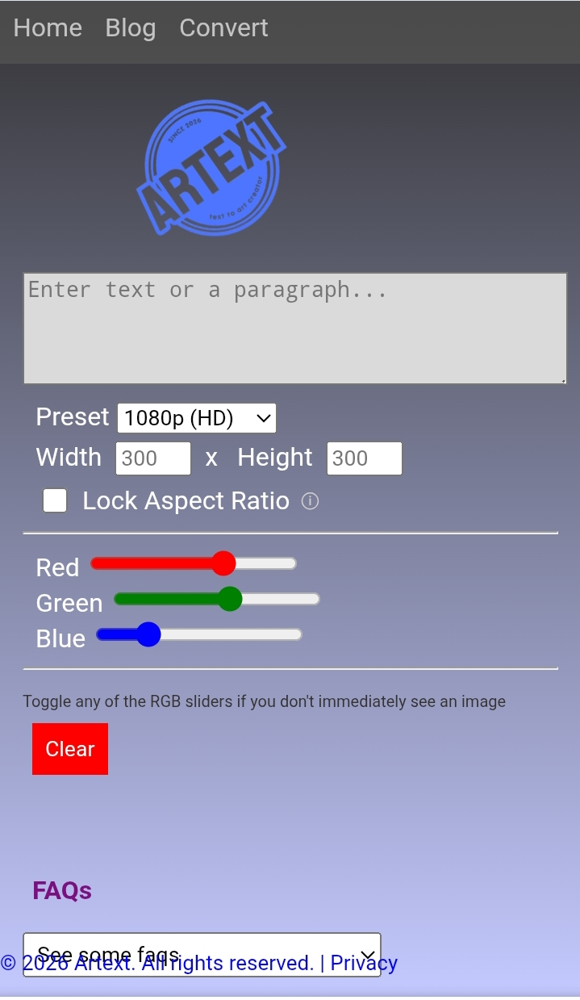
Artext
Everyone has innate creativity. Some find it more easily than others. Artext helps you bring out yours, using the one thing you've had since infancy. Words. Transform words into artful designs and patterns.
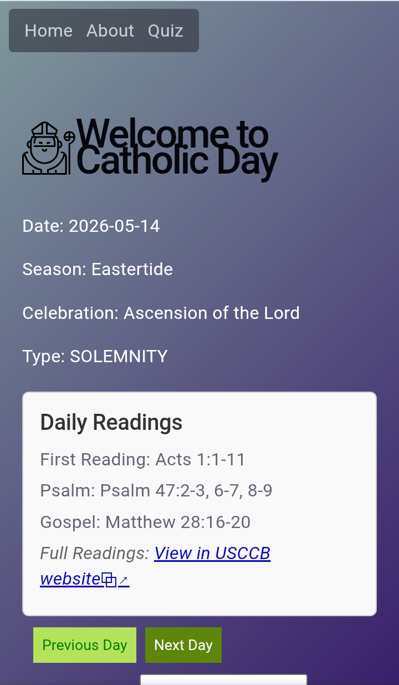
Catholic Day
The Catholic Faith is rich in tradition, and plentiful in dogma. It could be challenging to keep abreast. For old and new converts, CatholicDay keeps you on track.
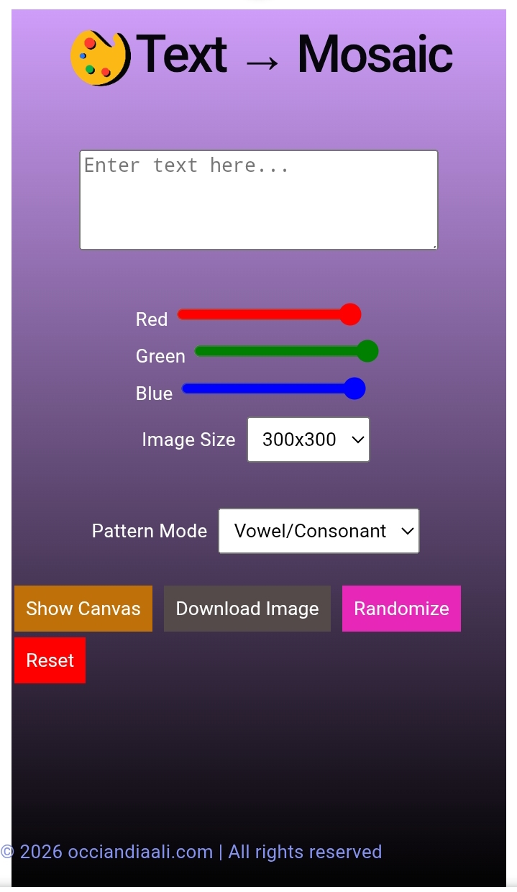
Text to Mosaic
Turn your text (words, paragraphs) into beautiful mosaic patterns, easily.
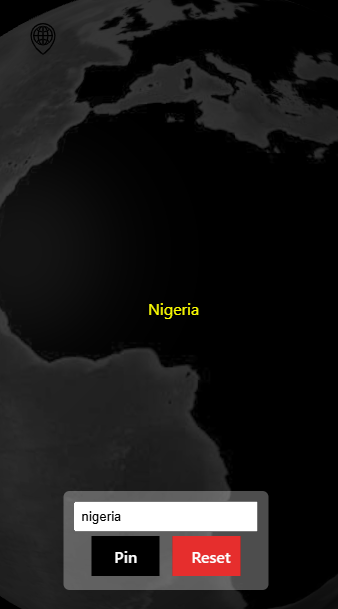
MapPin
Enter the name of a country, learn some facts about it, and find it on a map. Easily.
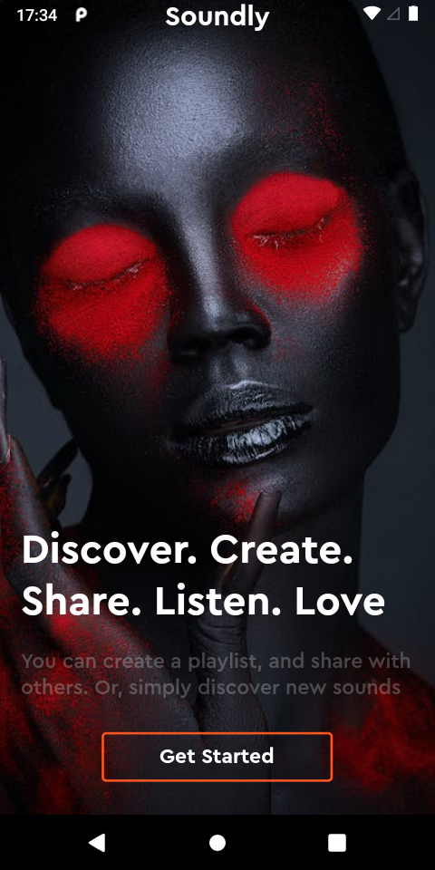
Soundly
A prototype for a personalizable music terminus. No longer available.
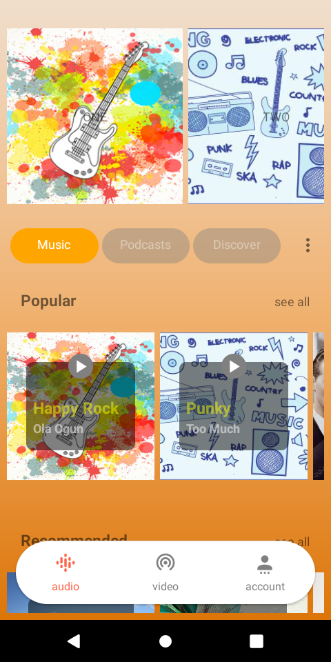
Ambit
Designed and built to help users buy and sell used items. No longer available.
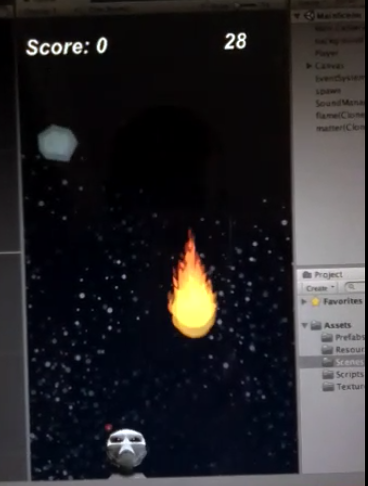
Alien Shot
One of my earliest creations. A prototype for a 2D mobile game. Built for Apple iOS. No longer available.